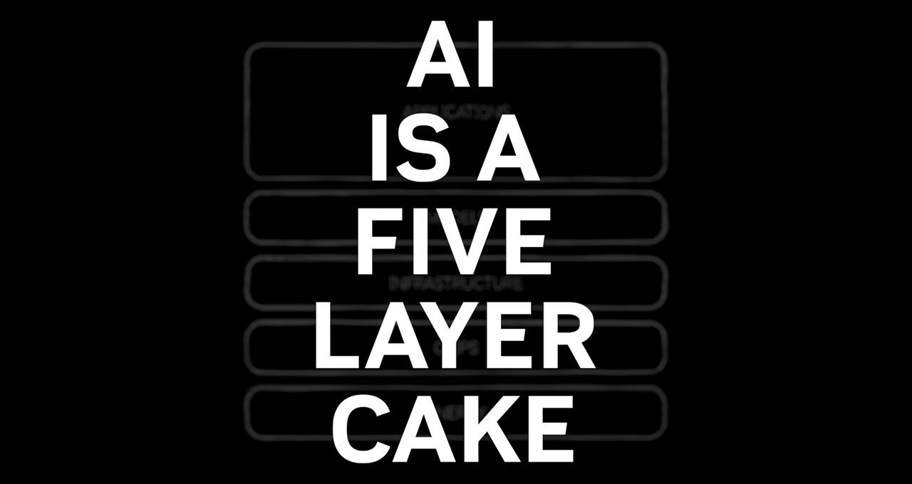
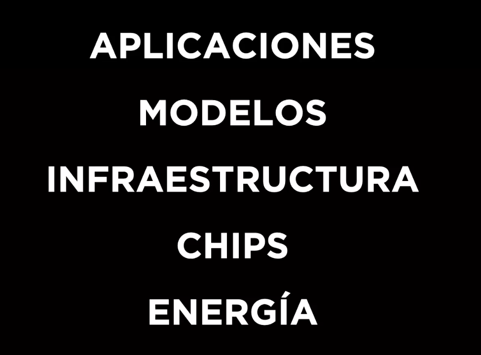
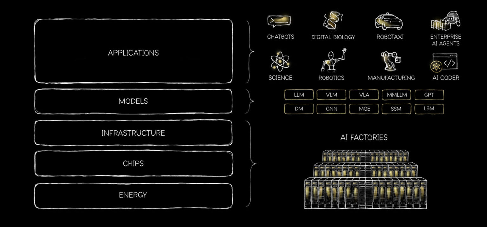
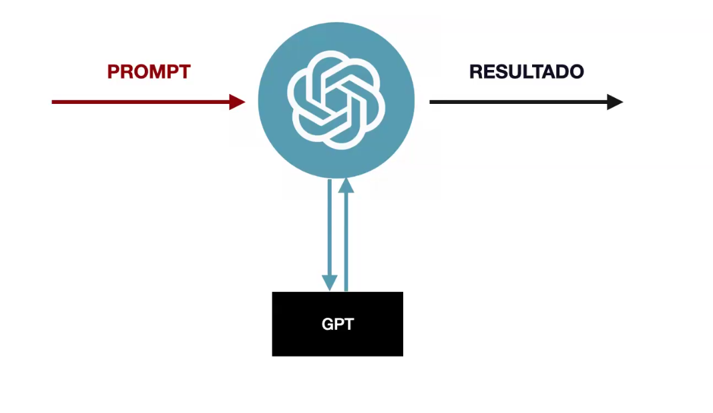
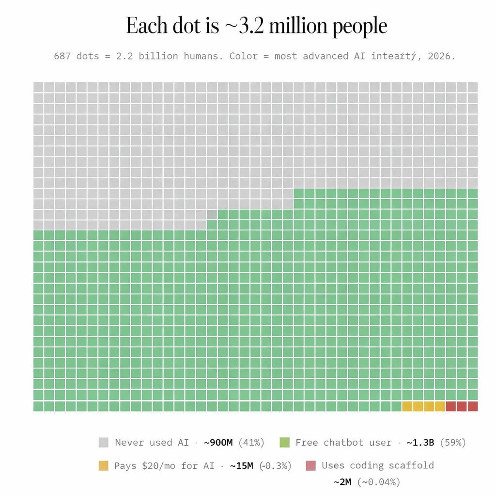

Bases tecnológicas y enfoques reales. Material organizado para despejar el "humo" mediático
—el marketing engañoso y las noticias exageradas— y comprender la tecnología desde su arquitectura y
funcionamiento real.
🗂️ Índice
🧱 Las 5 capas de la IA
🚂 Los tres trenes
💾 El modelo como objeto físico
🔤 Inferencia y tokens
🧩 Componentes de la interacción
🎲 Caja negra y alucinaciones
🌍 Panorama global y ventaja
🧱 1. Las 5 capas de la IA
Para entender la magnitud de esta tecnología, hay que visualizarla como una estructura de capas
dependientes. Si falta una pieza, el sistema completo deja de existir.


Capa 1 · Aplicación: la interfaz final (ChatGPT, Claude, Gemini). Funciona como una
"carcasa" que gestiona historial y preferencias.
Capa 2 · Modelo: el núcleo del sistema, un archivo informático de bytes con conocimiento
estadístico. Acá ocurre la inferencia.
Capa 3 · Arquitectura: el diseño lógico y las redes neuronales (como Transformer) que
permiten al modelo relacionar conceptos matemáticamente.
Capa 4 · Chips (Hardware): procesadores físicos (GPUs de Nvidia, TPUs de Google) necesarios
para cálculos masivos en tiempos razonables.
Capa 5 · Energía: la base. La IA requiere cantidades masivas de electricidad para
alimentar los chips y refrigeración para disipar el calor generado.

🔍 Qué tenés que saber de las capas
Entrenamiento vs inferencia: el entrenamiento ocurre entre la arquitectura y los chips, en
centros de datos. La inferencia sucede cuando la aplicación consulta al modelo ya entrenado.
La identidad de ChatGPT: ChatGPT es la aplicación (capa 1). El archivo que procesa
tus palabras es el modelo (capa 2), por ejemplo GPT-4.
El costo físico: la IA no es inmaterial. El requerimiento energético es extremo por el
estrés físico de calcular probabilidades masivas en milisegundos.
🚂 2. Cómo abordamos el trabajo con la IA
No hay un solo camino. Existen al menos tres enfoques principales para evitar el agobio de intentar aprender
herramientas que no necesitás.
🔬 El tren científico (producir IA)
Área de la matemática pura y la ciencia de datos. Diseña arquitecturas desde cero y entrena modelos en
supercomputadoras. Dirigido a perfiles académicos pesados.
⚙️ El tren técnico (integrar IA)
Área del desarrollo de software. Conecta modelos existentes con otras plataformas usando APIs. Ideal para
desarrolladores.
🛠️ El tren práctico (usar IA)
El enfoque de este material. Aprovechar la IA como herramienta de asistencia personal y profesional: tutor de
estudio, procesador de documentos extensos o uso de agentes autónomos sin programar.
💾 3. El modelo como objeto físico
Lejos de ser "magia negra", un modelo es un archivo informático (un conjunto de bytes) lleno
de números y relaciones estadísticas.
📦 Portabilidad y escala
Modelos locales: archivos minúsculos como Gemma (200 MB) o Qwen (700 MB)
que pueden ejecutarse en un teléfono o PC sin internet.
Modelos comerciales: motores como los de ChatGPT pesan terabytes y requieren centros de
datos industriales.
🖥️ La interfaz de ejecución: LM Studio
Como el modelo es un archivo estático, necesitás un software que lo cargue en RAM y gestione la conversación.
LM Studio es ideal para eso: gratuito para uso personal y profesional, no requiere Wi-Fi y
garantiza privacidad total.
Modelos disponibles: Qwen (licencia Apache 2.0), DeepSeek (licencia MIT) o Gemma (Google).
Son de código abierto o modelos abiertos.
Límites de hardware: tu RAM y GPU son el techo. Modelos de 70B de parámetros no van a
funcionar si no tenés el hardware adecuado.
Costo energético: en ejecución local, nadie te factura por token. Podés hacer
consultas infinitas y el único costo es la electricidad de tu PC.
🔤 4. El mecanismo interno: inferencia y tokens
Los modelos (LLMs) funcionan de manera similar al texto predictivo, pero a escala monumental. La IA no lee
letras: procesa tokens (fragmentos de palabras) representados como números. Mediante la
inferencia, el modelo calcula la probabilidad de qué token debería seguir al anterior.
Muestra las líneas de atención: el peso o importancia que el sistema le da a palabras
previas para decidir cuál sigue.
Permite observar el origen de la alucinación cuando el sistema elige opciones de baja
probabilidad.
🧩 5. Componentes y límites de la interacción
¿Cómo simula memoria un archivo estático? Mediante el diseño de la aplicación.
📜 System Prompt e historial
System Prompt: instrucción base que define comportamiento y reglas. Tiene prioridad sobre
el usuario.
Historial de chat: la aplicación reenvía todo el historial previo en cada mensaje para
simular coherencia.
🧠 Contexto y memoria
Ventana de contexto: límite máximo de tokens que el modelo procesa a la vez. No es
infinita: superarla hace que el sistema descarte datos previos.
Memoria (persistencia): capacidad de recordar preferencias entre diferentes sesiones de
chat.
Conectores: plugins o extensiones que permiten al modelo acceder a APIs o datos en tiempo
real.
🎲 6. Modelo vs aplicación: alucinaciones y caja negra
El modelo es una caja negra: ni sus ingenieros saben con exactitud por qué genera una
respuesta específica.

🤥 Por qué mienten
Para evitar respuestas robóticas se usa la temperatura, que permite al modelo elegir caminos
estadísticos menos probables. Acá nace la alucinación: la IA inventa datos con total
seguridad.
🧭 Criterio humano e iteración
Los resultados nunca son verdad absoluta. Es obligatorio validar con fuentes externas e iterar:
corregir a la IA y ajustar prompts para acotar el margen de error estadístico.
🌍 7. Panorama global y ventaja competitiva
Para finalizar, dónde estamos parados respecto al resto del mundo. El siguiente gráfico da una referencia
aproximada de la adopción tecnológica actual.

📊 Análisis y realidad actual
Aunque el gráfico sugiere que un porcentaje masivo de la población mundial todavía no interactuó con IA (área
gris), los datos más recientes indican que la adopción es mucho más acelerada.
Realidad de mercado: solo OpenAI reporta más de 800 millones de usuarios activos
semanales, alrededor del 10% de la población global.
"Humo" vs uso real: la mayoría (área verde) se queda en la superficie, usando chatbots
gratuitos de forma recreativa o básica.
Tu ventaja: al entender qué es un modelo físicamente, cómo funciona la inferencia y cómo
gestionar la ventana de contexto, dejás de ser un usuario recreativo y pasás al grupo que utiliza la IA con
criterio técnico y estratégico.
🏁 Conclusión final
Estamos viviendo un punto de inflexión histórico. Los sistemas de IA están redefiniendo
sectores completos y su evolución es exponencial.
Comprender que interactuamos con un archivo matemático complejo y no con una entidad
consciente nos da el poder de supervisar, corregir y amplificar resultados mediante el criterio
humano.
"La IA no reemplazará a los humanos, pero los humanos que usen IA reemplazarán a los que no lo hagan."
— Karim Lakhani, profesor de Harvard
👁️ Revelar la sexta capa oculta
Capa 6 · El contexto mundial
Más allá de los bits, los archivos y las aplicaciones, existe una dimensión física que rara vez se
menciona. La inteligencia artificial no habita en un espacio abstracto: reside en infraestructuras masivas
que consumen recursos planetarios de forma tangible.